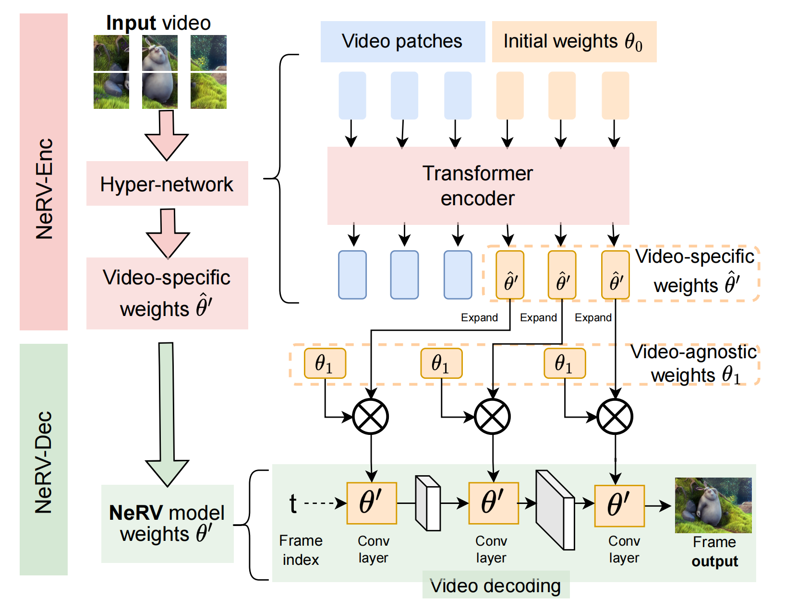
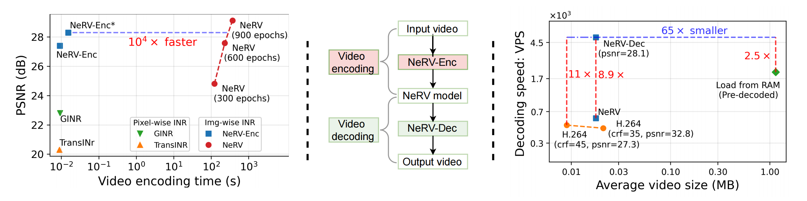
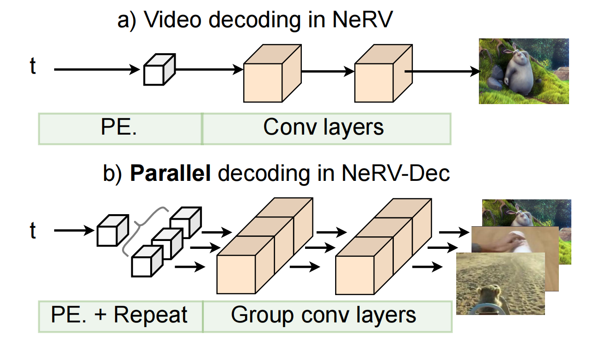
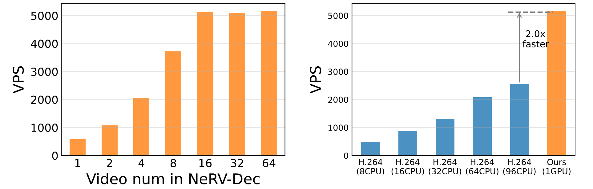

Fast Encoding and Decoding for Implicit Video Representation ECCV 2024
- Hao Chen1 Saining Xie2, Ser-Nam Lim3,
- Abhinav Shrivastava1
1 University of Maryland, College Park 2 New York University, 3 University of Central Florida
Abstract
Despite the abundant availability and content richness for video data, its high-dimensionality poses challenges for video research. Recent advancements have explored the implicit representation for videos using neural networks, demonstrating strong performance in applications such as video compression and enhancement. However, the prolonged encoding time remains a persistent challenge for video Implicit Neural Representations (INRs). In this paper, we focus on improving the speed of video encoding and decoding within implicit representations. We introduce two key components: NeRV-Enc, a transformer-based hyper-network for fast encoding; and NeRV-Dec, a parallel decoder for efficient video loading. NeRV-Enc achieves an impressive speed-up of 104× by eliminating gradient-based optimization. Meanwhile, NeRV-Dec simplifies video decoding, outperforming conventional codecs with a loading speed 11× faster, and surpassing RAM loading with pre-decoded videos (2.5× faster while being 65× smaller in size).
1) Overview of FastNeRV
a) Overall framework of our Fast encoding & decoding framework
b) Significant speedup for encoding & decoding
2) Fast Video Encoding
a) Encoding speedup without Gradient-based Optimization
b) Our image-wise implicit representtation VS pixel-wise implicit representation
3) Video Decoding via Efficent Paralleization
a) Parallel Decoding based on NeRV-Dec
b) Decoding speedup
4) Video restoration in implicit space
Top: Input degraded videos.
Bottom: Output restored videos.
Citation
The website template was borrowed from Ben Mildenhall.